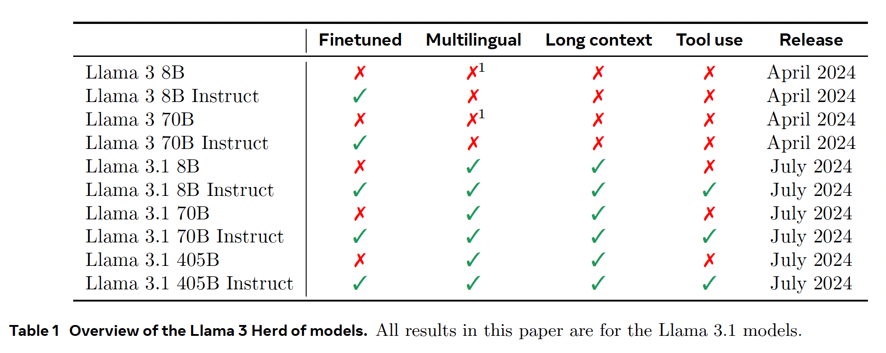
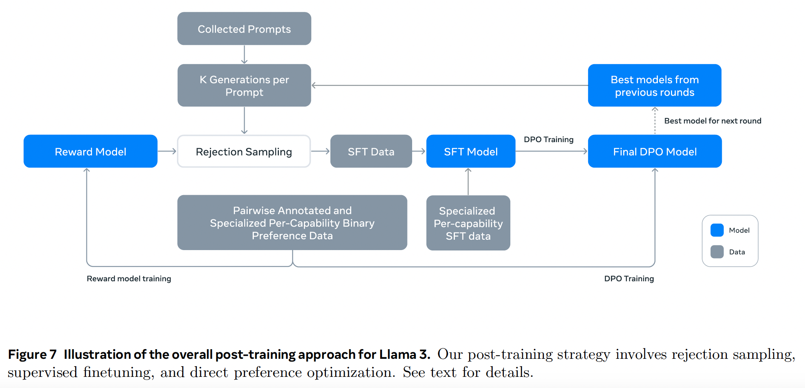
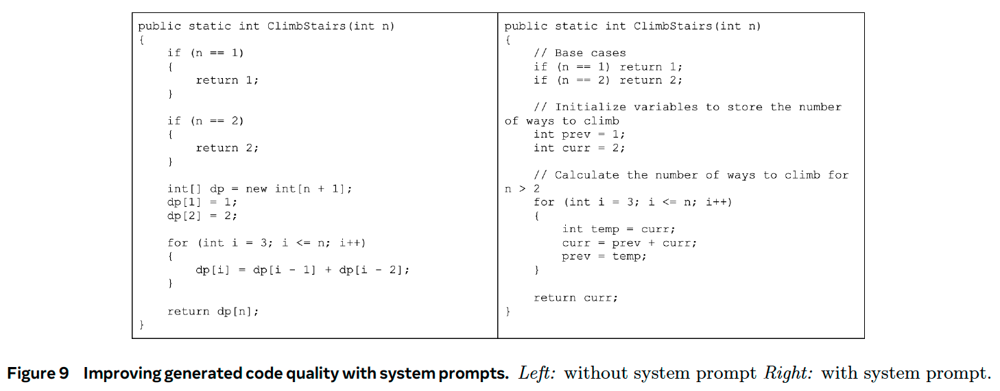
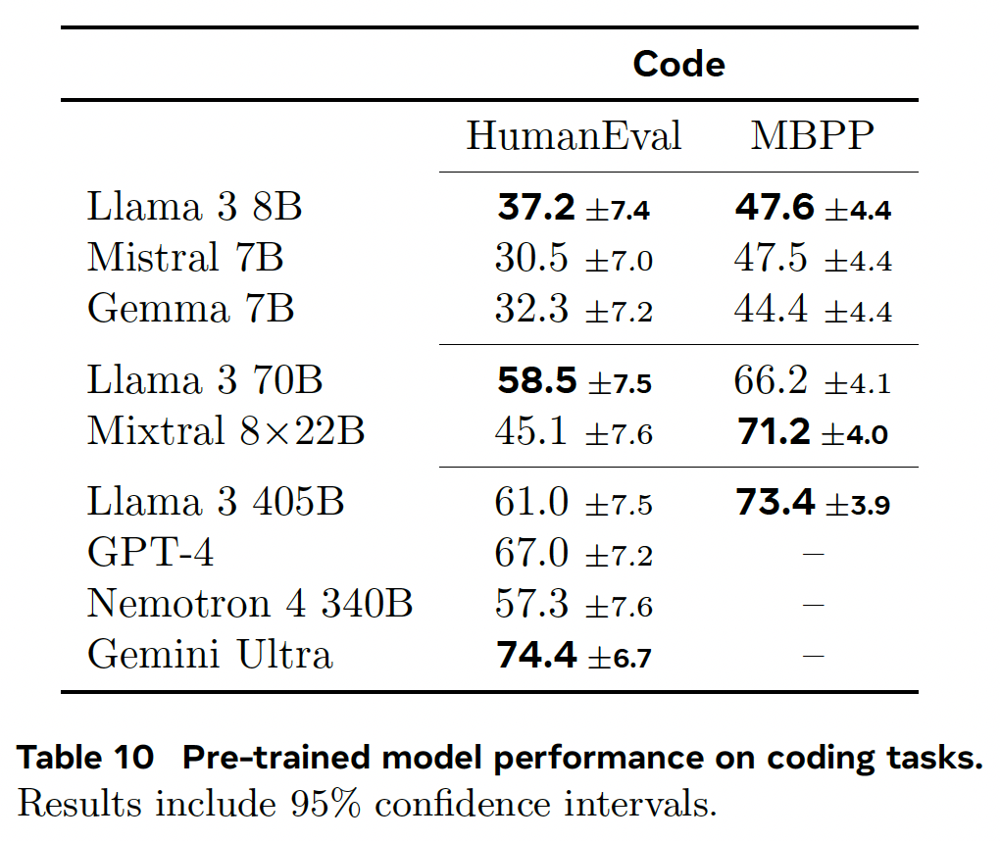
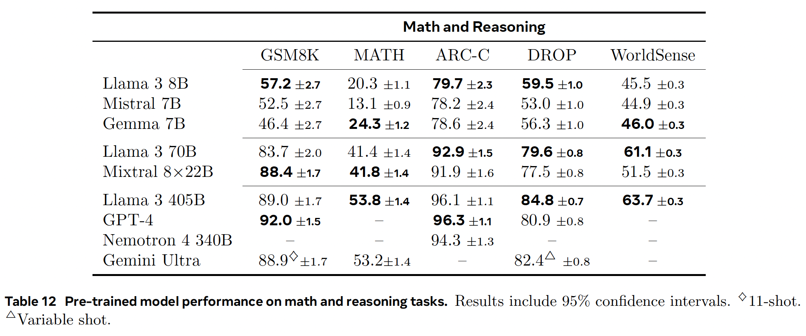
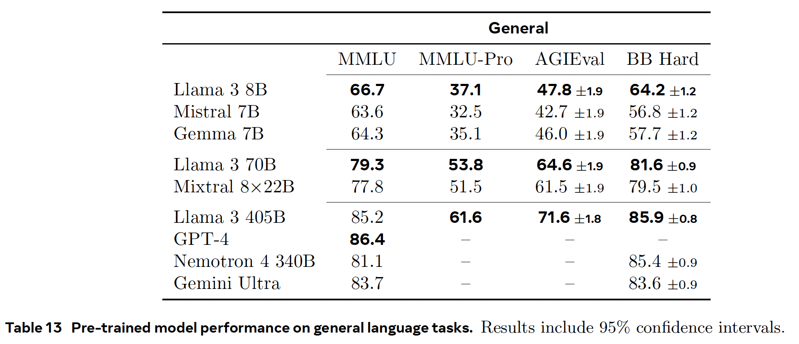
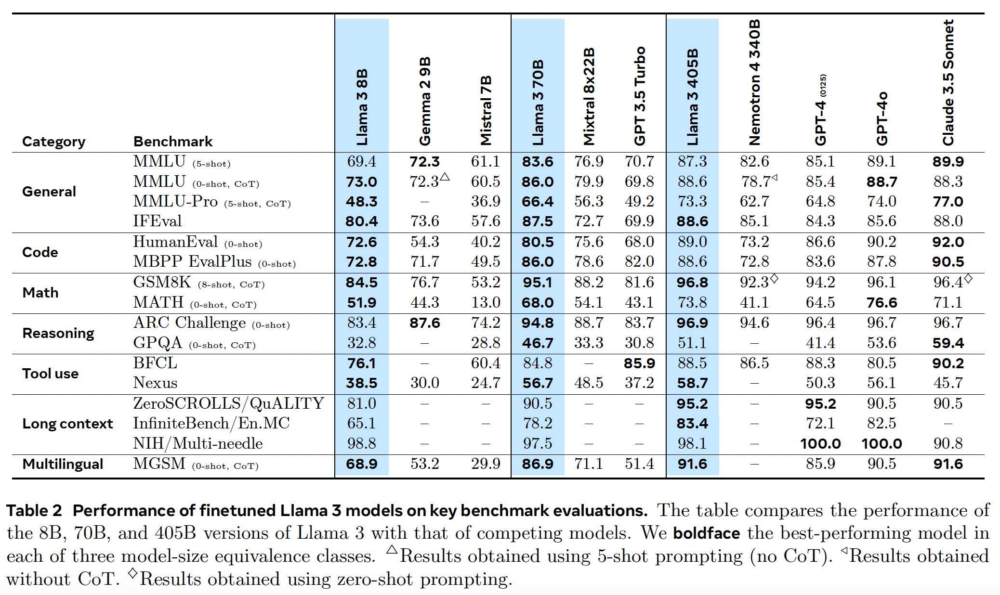

Llama 3#
Note
Llama 3 is a herd of language models that natively support multilinguality, coding, reasoning, and tool usage. Our largest model is a dense Transformer with 405B parameters and a context window of up to 128K tokens.

Pre-Training#
Web Data Curation#
Tip
Much of the data we utilize is obtained from the web and we describe our cleaning process below.
PII and safety filtering.
Text extraction and cleaning.
De-duplication.
Heuristic filtering.
Model-based quality filtering.
Code and reasoning data.
Multilingual data.
Determining the Data Mix#
Our main tools in determining this data mix are knowledge classification
and scaling law experiments. Our final data mix contains roughly 50% of tokens corresponding to general knowledge,
25% of mathematical and reasoning tokens, 17% code tokens, and 8% multilingual tokens.
Annealing Data#
We find that annealing on small amounts of high-quality code and mathematical data can boost the performance of pre-trained models on key benchmarks.
Tip
The recipe used to pre-train Llama 3 405B consists of three main stages:
Initial pre-training;
Long-context pre-training;
Annealing.
Model Architecture#
Llama 3 uses a standard, dense Transformer architecture, with a few smaller modifications:
We use grouped query attention.
We use an attention mask that prevents self-attention between different documents within the same sequence. We find that this change had limited impact during in standard pre-training, but find it to be important in continued pre-training on very long sequences.
Post-Training#
We produce the aligned Llama 3 models by applying several rounds of SFT and DPO on examples collected either via human annotations or generated synthetically.
Modeling#

Reward Modeling. We train a reward model (RM) covering different capabilities on top of the pre-trained checkpoint. We use all of our preference data for reward
modeling after filtering out samples with similar responses.
Supervised Finetuning. The reward model is then used to perform rejection sampling on our human annotation prompts, Together with this rejection-sampled data and other data sources (including synthetic data), we finetune the pre-trained language model using a standard cross entropy loss on the target tokens.
Direct Preference Optimization. We further train our SFT models with DPO for human
preference alignment. For training, we primarily use the most recent batches of preference data collected using
the best performing models from the previous alignment rounds. Regularization with NLL loss (DPOP) is used.
Model Averaging. Finally, we average models obtained from experiments using various versions of data or hyperparameters at each RM, SFT, or DPO stage.
Iterative Rounds. Following Llama 2, we apply the above methods in six rounds. In each cycle, we collect new preference annotations and SFT data, sampling synthetic data from the latest models.
Preference Data#
We deploy multiple models for annotation after
each round and sample two responses from two different models for each user prompt. These models can
be trained with different data mixes and alignment recipes, allowing for different capability strength. We ask annotators to rate the strength of their preference by
categorizing it into one of four levels: significantly better, better, slightly better, or marginally better. We also incorporate an editing
step after preference ranking to encourage annotators to further improve the preferred response. Consequently,
a portion of our preference data has three responses ranked \((edited > chosen > rejected)\).
Caution
How to collect multi-turn preference data from two different models? One possible solution:
\(query_1 \to (chosen_1, rejected_1)\)
\(answer_1 := chosen_1\)
\((query_1, answer_1, query_2) \to (chosen_2, rejected_2)\)
SFT Data#
Our finetuning data is largely comprised of the following sources:
Prompts from our human annotation collection with rejection-sampled responses
Synthetic data targeting specific capabilities (See Coding Capability for more details)
Small amounts of human-curated data
Rejection sampling. During rejection sampling (RS), for each prompt collected during human annotation we sample \(K\) (typically between 10 and 30) outputs from the latest chat model policy (usually the best performing checkpoint from the previous post-training iteration, or the best performing checkpoint for a particular capability) and use our reward model to select the best candidate.
Data Processing and Quality Control#
Given that most of our training data is model-generated, it requires careful cleaning and quality control.
Topic classification: We first finetune Llama 3 8B into a topic classifier, and perform inference over all data to classify it into both coarsely-grained buckets (“mathematical reasoning”) and fine-grained buckets (“geometry and trigonometry”).
Quality scoring: We use both reward model and Llama-based signals to obtain a quality score for each sample. For an RM-based score, we consider data that is in the top quartile of RM scores as high quality. For a Llama-based score, we prompt Llama 3 checkpoint to rate each sample. We select examples that are marked as high quality by the RM
orthe Llama-based filter.Difficulty scoring: Because we are also interested in prioritizing examples that are more complex for the model, we score data using two measures of difficulty:
Instagand Llama-based scoring.Semantic deduplication: Finally, we perform semantic deduplication. We first cluster complete dialogs using RoBERTa and within each cluster sort them by quality score \(\times\) difficulty score. We then do greedy selection by iterating through all sorted examples, and only keeping the ones that have maximum cosine similarity less than a threshold to the examples seen so far in the cluster.
Coding Capability#
Expert training. We train a code expert model for both preference data annotation and rejection sampling.
Synthetic data generation. We use Llama 3 and the code expert to generate a large quantity of synthetic SFT dialogs. We describe three high-level approaches for generating synthetic code data used during SFT.
Synthetic data generation: execution feedback. The 8B and 70B models show significant performance improvements when trained on data generated by a larger, more competent model. However, our initial experiments revealed that training Llama 3 405B on its own generated data is not helpful (and can even degrade performance). To address this limitation, we introduced execution feedback as a source of truth, in particular, we generate large dataset of approximately one million synthetic coding dialogues using the following process:
Problem description generation: Magicoder[WWL+24].
Solution generation: Then, we prompt Llama 3 to solve each problem in a given programming language.
Correctness analysis: We extract the source code from the generated solution and applied a combination of static and dynamic analysis techniques to test its correctness:
Static analysis: We run all generated code through a parser and a linter to ensure syntactic correctness.
Unit test generation and execution: For each problem and solution, we prompt the model to generate unit tests, executed in a containerized environment together with the solution, catching run-time execution errors and some semantic errors.
Error feedback and iterative self-correction: When a solution fails at any step, we prompt the model to revise it. The prompt included the original problem description, the faulty solution, and feedback from the parser/linter/tester. After a unit test execution failure, the model could either fix the code to pass the existing tests or modify its unit tests to accommodate the generated code. Only dialogs that pass all checks are included in the final dataset, used for supervised finetuning (SFT).
Fine-tuning and iterative improvement: The finetuning process is conducted over multiple rounds, with each round building on the previous one.
Synthetic data generation: programming language translation. We observe a performance gap between major programming languages (e.g., Python/C++) and less common ones (e.g., Typescript/PHP). To mitigate this, we supplement our existing data by translating data from common programming languages to less common languages. This is achieved by prompting Llama 3 and ensuring quality via syntax parsing, compilation, and execution.
Synthetic data generation: backtranslation. To improve certain coding capabilities (e.g., documentation, explanations and debugging) where execution feedback is less informative for determining quality, we employ an alternative multi-step approach. Beginning with code snippets from a variety of languages in our pre-training data:
Generate: We prompt Llama 3 to generate data that represents our target capability (e.g., we ask the model to explain a piece of code).
Backtranslate: We then prompt the model to “backtranslate” the synthetically generated data to the original code (e.g., we ask the model to generate code only from its explanation).
Filter: Using the original code as a reference, we prompt the Llama 3 to determine the quality of the output (e.g., we ask the model how faithful the backtranslated code is to the original). We then use the generated examples that have the highest self-verification scores in SFT.
System prompt steering during rejection sampling. During the rejection sampling process, we used code specific system prompts to improve code readability, documentation, thoroughness, and specificity.

Filtering training data with execution and model-as-judge signals. We occasionally encounter quality issues in our rejection-sampled data. Detecting these issues in our rejection-sampled data is not as straightforward as it is for our synthetic code data. To address this, we utilize the “model-as-judge” approach, where earlier versions of Llama 3 assess and assign a binary (0/1) score based on two criteria: code correctness and code style. We retain only those samples that achieve a perfect score of 2. Initially, this stringent filtering led to a regression in downstream benchmark performance, primarily because it disproportionately removed examples with challenging prompts. To counteract this, we strategically revise the responses of some coding data categorized as most challenging until they met the Llama-based “model-as-judge” criteria.
Results#
Pre-trained Language Model#
{kind=link}



Post-trained Language Model#
